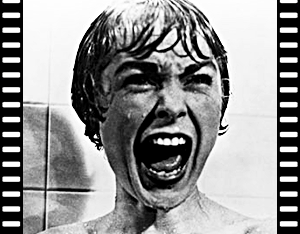

|  | Título no Brasil: Psicose | Título Original: Psycho |
| Ano de produção: 1960 | País de Origem: Estados Unidos | |
| Diretor: Alfred Hitchcock | Trailer: YOUTUBE | |
Sinopse:Em Phoenix, Arizona, Marion Crane (Anne Heche), secretária de uma imobiliária, rouba 40 mil dólares do seu patrão. Com este dinheiro, ela sonha recomeçar sua vida com o homem que ama e, quando ruma ao seu encontro, acaba se perdendo e decide pernoitar em um velho motel administrado por Norman Bates (Vince Vaughn). Só que Marion não sabe que Norman é totalmente insano, e ele termina por esfaqueá-la enquanto ela está no chuveiro, matando-a. Norman se livra do corpo sem saber do dinheiro roubado, mas um detetive particular, que está encarregado do caso, acaba conhecendo o namorado de Marion e sua irmã e os três, ignorando que ela já está morta, tentam encontrá-la. Mas Norman Bates está no caminho deles. |
||